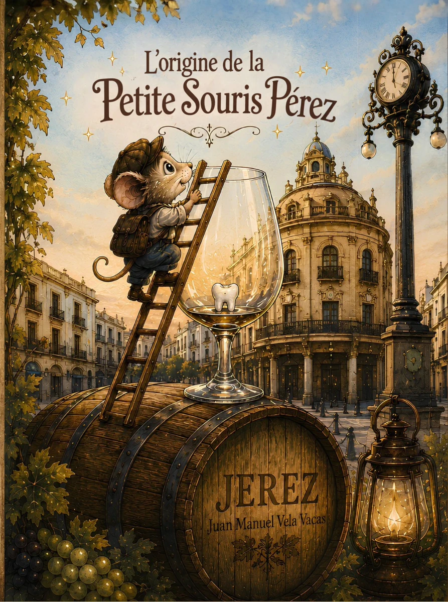

Juan Manuel Vela Vacas
Des histoires pour enfants où la tradition, l'imagination et Jerez prennent vie.
Découvrez des histoires pleines de magie, de tradition et d'émotion, créées pour les petits comme pour les grands.
Chaque histoire commence par une question
Des histoires très différentes, nées de l'imagination, de la tradition et de ces petites choses qui méritent de devenir un conte.

L'origine de la Petite Souris
Avant de devenir la souris la plus célèbre du monde, Pérez n'était qu'une petite souris qui vivait à Jerez.
DÉCOUVRIR L'HISTOIRE →
Jara, la noble CPD
Une histoire d'amour, de respect et d'éducation. Car ce n'est pas son apparence qui compte, mais son cœur.
📖 Disponible en espagnol, anglais et français
RENCONTRER JARA →Saviez-vous que le Père Noël
a une histoire espagnole ?
Une nouvelle histoire prend forme. Avant de devenir le personnage que nous connaissons tous, il y eut un homme, une légende et un voyage qui allait tout changer.
La prochaine histoire de Juan Manuel Vela Vacas.
Saint Nicolas
Une nouvelle histoire est sur le point de commencer...

Bonjour, moi c'est Juan Manuel.
Je suis originaire de Jerez et j'aime transformer des idées, des souvenirs et de petites histoires en contes que les enfants comme les adultes peuvent apprécier.
Je m'inspire de la tradition, des animaux et de cette magie qui apparaît lorsqu'une histoire parvient à rester dans la mémoire.
Explorez d'autres histoires
Si une histoire vous a plu, découvrez également les autres contes de l'auteur.